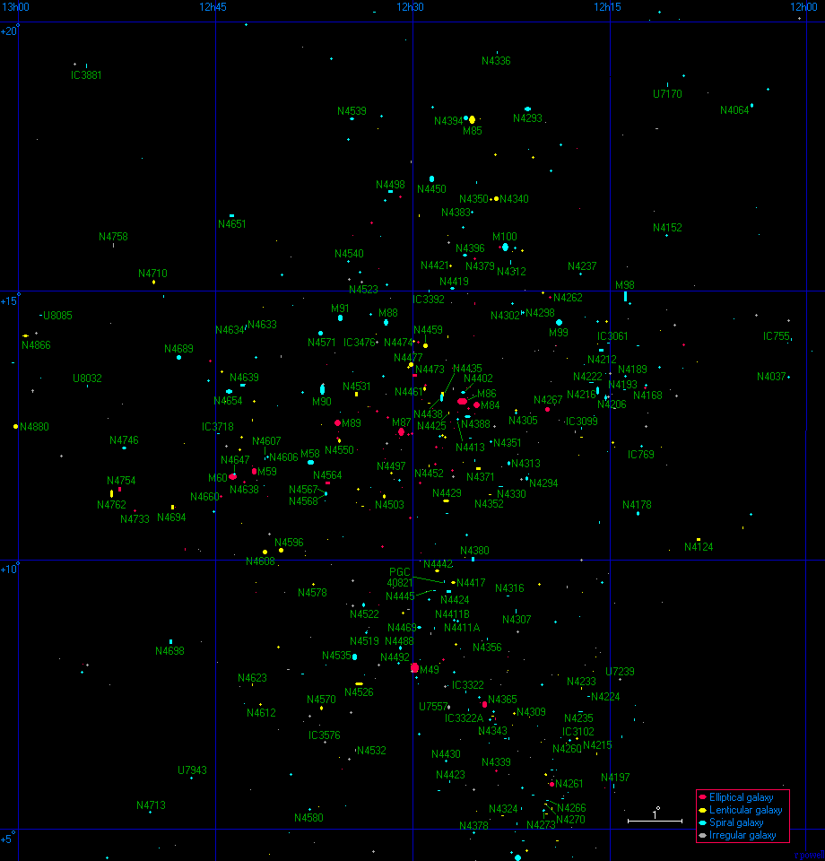
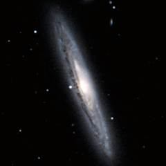
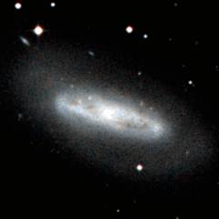
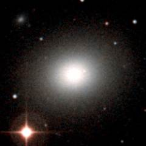
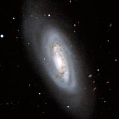

عنقود العذراء المجري هو عنقود ضخم من المجرات يهيمن على العنقود الفائق العذراء. يحتوي هذا العنقود على ما يقرب من 2000 مجرة (على الرغم من أن تسعين بالمئة منها مجرات قزمة). يبلغ قطر هذا العنقود حوالي 15 مليون سنة ضوئية، وهو ليس أكبر بكثير من مجموعتنا المحلية، لكنه يحتوي على خمسين ضعف عدد المجرات. تُظهر هذه الخريطة 600 من ألمع المجرات ضمن 7.5 درجة من مركز العنقود - وهذا حد تعسفي، حيث توجد العديد من المجرات الأخرى خارج هذا الحد، خاصة إلى الجنوب من العنقود حيث توجد عدة مجموعات مجرية إضافية. تم تسمية أكبر 160 مجرة على هذه الخريطة. هناك أيضًا نسخة سلبية من هذه الخريطة قد تكون أسهل في الطباعة.

أدناه - تسع مجرات على الجانب الأيمن من عنقود العذراء. (أعلى-يمين) M98 و (أعلى-وسط) NGC 4216 هما مجرتان حلزونيتان متشابهتان تُريان من نفس الزاوية. (أعلى-يسار) M99 هي مجرة حلزونية غير متوازنة جدًا. (وسط-يمين) NGC 4293 هي مجرة حلزونية بالقرب من قمة عنقود العذراء. (وسط الوسط) M100 هي واحدة من أشهر المجرات الحلزونية في السماء. (وسط-يسار) NGC 4365 هي مجرة إهليلجية كبيرة بالقرب من قاع عنقود العذراء. (أسفل-يمين) M84 هي مجرة إهليلجية كبيرة بالقرب من مركز عنقود العذراء. (أسفل-وسط) M85 هي مجرة عدسية كبيرة تقع إلى الشمال. تُظهر هذه المجرة بعض الهياكل الشبيهة بالأصداف، وربما يكون ذلك بسبب ابتلاعها لمجرة حلزونية في آخر بضع مئات الملايين من السنين. (أسفل-يسار) M86 هي واحدة من أكبر المجرات الإهليلجية في عنقود العذراء. لديها نواة لامعة محاطة بهالة باهتة ولكن واسعة من النجوم.
 |
||
| M98 | NGC 4216 | M99 |
 |
||
| NGC 4293 | M100 | NGC 4365 |
| M84 | M85 | M86 |
هذه قائمة بأكبر 160 مجرة في عنقود العذراء - وهي كل المجرات المميزة على الخريطة أعلاه. تتضمن هذه القائمة كل مجرة يزيد حجمها الزاوي عن 1.8 دقيقة قوسية ضمن 7.5 درجة من مركز العنقود، وهو ما يعادل على بعد 52 مليون سنة ضوئية كل مجرة يزيد قطرها عن 30 ألف سنة ضوئية ضمن 7 ملايين سنة ضوئية من المركز. قد تكون بعض هذه المجرات مجرات أمامية أو خلفية في محيط العنقود.
| الاسم | الإحداثيات الاستوائية مطلع مستقيم RA ميل Dec |
القدر الأزرق | النوع | الحجم الزاوي دقائق قوسية(′) |
الحجم (ألف سنة ضوئية) |
سرعة التقهقر (كم/ث) |
أسماء أخرى | |
|---|---|---|---|---|---|---|---|---|
| IC 755 | 12 01.2 | +14 06 | 14.8 | SBb | 2.1 | 30 | 1839 | |
| NGC 4037 | 12 01.4 | +13 24 | 13.1 | SBb | 2.3 | 35 | 1265 | |
| NGC 4064 | 12 04.2 | +18 27 | 12.3 | SBa | 4.0 | 60 | 1252 | |
| NGC 4124 | 12 08.2 | +10 23 | 12.5 | S0 | 3.2 | 50 | 1993 | |
| UGC 7170 | 12 10.6 | +18 50 | 14.9 | Sc | 3.0 | 45 | 2771 | |
| NGC 4152 | 12 10.6 | +16 02 | 13.0 | SBc | 1.8 | 30 | 2490 | |
| NGC 4168 | 12 12.3 | +13 12 | 12.2 | E | 2.7 | 40 | 2639 | |
| IC 769 | 12 12.5 | +12 07 | 13.4 | SBbc | 2.6 | 40 | 2545 | |
| NGC 4178 | 12 12.8 | +10 52 | 12.1 | SBcd | 4.9 | 75 | 712 | |
| NGC 4189 | 12 13.8 | +13 25 | 12.5 | SBc | 2.5 | 35 | 2442 | |
| M98 | 12 13.8 | +14 54 | 10.9 | SBb | 9.8 | 150 | 184 | NGC 4192 |
| NGC 4193 | 12 13.9 | +13 10 | 13.3 | SBbc | 2.2 | 35 | 2804 | |
| UGC 7239 | 12 14.2 | +07 47 | 13.9 | Irr | 2.1 | 30 | 1563 | |
| NGC 4197 | 12 14.6 | +05 48 | 13.6 | Sc | 3.2 | 50 | 2406 | |
| IC 3061 | 12 15.1 | +14 02 | 14.4 | SBc | 2.2 | 35 | 2644 | |
| NGC 4206 | 12 15.3 | +13 01 | 12.8 | Sbc | 5.2 | 80 | 1031 | |
| NGC 4212 | 12 15.7 | +13 54 | 11.9 | Sc | 3.1 | 45 | 245 | |
| NGC 4216 | 12 15.9 | +13 09 | 10.9 | SBb | 7.9 | 120 | 459 | |
| NGC 4215 | 12 15.9 | +06 24 | 13.0 | S0 | 1.9 | 30 | 2412 | |
| NGC 4222 | 12 16.4 | +13 18 | 13.9 | Sc | 3.2 | 50 | 557 | |
| NGC 4224 | 12 16.6 | +07 28 | 13.0 | Sa | 2.5 | 40 | 2937 | |
| NGC 4233 | 12 17.1 | +07 37 | 12.9 | S0 | 2.3 | 35 | 2699 | |
| IC 3099 | 12 17.2 | +12 27 | 15.1 | Sc | 1.9 | 30 | 2462 | |
| NGC 4235 | 12 17.2 | +07 11 | 12.6 | Sa | 3.8 | 60 | 2748 | |
| NGC 4237 | 12 17.2 | +15 19 | 12.5 | SBbc | 2.1 | 30 | 1188 | |
| IC 3102 | 12 17.4 | +06 41 | 13.1 | S0 | 2.4 | 35 | 2577 | |
| M99 | 12 18.8 | +14 25 | 10.4 | Sc | 5.4 | 80 | 2735 | NGC 4254 |
| NGC 4260 | 12 19.4 | +06 06 | 12.7 | SBa | 2.5 | 35 | 2184 | |
| NGC 4261 | 12 19.4 | +05 50 | 11.3 | E | 4.0 | 60 | 2527 | |
| NGC 4262 | 12 19.5 | +14 53 | 12.4 | E | 1.9 | 30 | 1683 | |
| NGC 4266 | 12 19.7 | +05 32 | 14.3 | SBa | 1.9 | 30 | 340 | |
| NGC 4267 | 12 19.8 | +12 48 | 12.0 | E | 3.0 | 45 | 1359 | |
| NGC 4270 | 12 19.8 | +05 28 | 13.1 | S0 | 2.0 | 30 | 2697 | |
| NGC 4273 | 12 19.9 | +05 21 | 12.7 | SBc | 2.1 | 30 | 2723 | |
| NGC 4293 | 12 21.2 | +18 23 | 11.2 | Sa | 5.5 | 85 | 1247 | |
| NGC 4294 | 12 21.3 | +11 31 | 12.7 | SBc | 3.0 | 45 | 688 | |
| NGC 4298 | 12 21.5 | +14 36 | 12.1 | Sc | 3.0 | 45 | 1464 | |
| NGC 4302 | 12 21.7 | +14 36 | 12.5 | Sc | 4.9 | 75 | 1442 | |
| NGC 4305 | 12 22.1 | +12 44 | 13.4 | Sa | 2.0 | 30 | 2221 | |
| NGC 4307 | 12 22.1 | +09 03 | 12.8 | Sb | 3.5 | 50 | 1405 | |
| NGC 4309 | 12 22.2 | +07 09 | 14.4 | S0 | 1.9 | 30 | 1208 | |
| NGC 4312 | 12 22.5 | +15 32 | 12.5 | Sab | 4.7 | 70 | 474 | |
| NGC 4313 | 12 22.6 | +11 48 | 12.6 | Sab | 3.8 | 60 | 1773 | |
| NGC 4316 | 12 22.7 | +09 20 | 13.7 | Sc | 2.5 | 40 | 1587 | |
| M100 | 12 22.9 | +15 49 | 10.1 | SBbc | 7.6 | 115 | 1899 | NGC 4321 |
| NGC 4324 | 12 23.1 | +05 15 | 12.5 | S0 | 2.8 | 45 | 2007 | |
| NGC 4330 | 12 23.3 | +11 22 | 13.3 | Sc | 4.0 | 60 | 1899 | |
| NGC 4336 | 12 23.5 | +19 26 | 13.2 | Sa | 1.9 | 30 | 1315 | |
| NGC 4339 | 12 23.6 | +06 05 | 12.3 | E | 2.2 | 35 | 1625 | |
| NGC 4340 | 12 23.6 | +16 43 | 12.1 | S0 | 3.2 | 50 | 1236 | |
| NGC 4343 | 12 23.6 | +06 57 | 13.2 | Sb | 2.3 | 35 | 1349 | |
| NGC 4350 | 12 24.0 | +16 42 | 11.9 | S0 | 2.9 | 45 | 1544 | |
| NGC 4351 | 12 24.0 | +12 12 | 13.1 | SBab | 1.9 | 30 | 2644 | NGC 4354 |
| NGC 4352 | 12 24.1 | +11 13 | 13.5 | S0 | 1.9 | 30 | 2407 | |
| NGC 4356 | 12 24.2 | +08 32 | 14.0 | Sc | 2.6 | 40 | 1468 | |
| NGC 4365 | 12 24.5 | +07 19 | 10.6 | E | 5.8 | 85 | 1573 | |
| NGC 4371 | 12 24.9 | +11 42 | 11.8 | S0 | 4.0 | 60 | 1273 | |
| M84 | 12 25.1 | +12 53 | 10.1 | E | 6.0 | 90 | 1239 | NGC 4374 |
| NGC 4379 | 12 25.2 | +15 36 | 12.6 | E | 1.9 | 30 | 1372 | |
| NGC 4378 | 12 25.3 | +04 56 | 12.5 | Sa | 2.5 | 40 | 2889 | |
| NGC 4380 | 12 25.4 | +10 01 | 12.6 | Sab | 3.2 | 50 | 1301 | |
| M85 | 12 25.4 | +18 11 | 10.0 | S0 | 7.1 | 105 | 1056 | NGC 4382 |
| NGC 4383 | 12 25.4 | +16 28 | 12.6 | Sa | 2.0 | 30 | 2028 | |
| IC 3322A | 12 25.7 | +07 13 | 14.0 | SBc | 2.8 | 45 | 1331 | |
| NGC 4388 | 12 25.8 | +12 40 | 11.9 | Sb | 5.5 | 85 | 2845 | |
| IC 3322 | 12 25.9 | +07 33 | 14.2 | SBc | 2.3 | 35 | 1534 | |
| NGC 4394 | 12 25.9 | +18 13 | 11.7 | SBb | 3.5 | 50 | 1234 | |
| NGC 4396 | 12 26.0 | +15 40 | 13.1 | Scd | 3.2 | 50 | 195 | |
| NGC 4402 | 12 26.1 | +13 07 | 12.6 | Sb | 3.5 | 55 | 562 | |
| M86 | 12 26.2 | +12 57 | 9.9 | E | 10.2 | 155 | 37 | NGC 4406 |
| NGC 4411A | 12 26.5 | +08 52 | 13.7 | SBc | 1.9 | 30 | 1613 | |
| NGC 4413 | 12 26.5 | +12 37 | 13.1 | SBab | 2.2 | 35 | 427 | |
| NGC 4411B | 12 26.8 | +08 53 | 13.2 | SBc | 2.5 | 35 | 1602 | |
| NGC 4417 | 12 26.8 | +09 35 | 12.0 | S0 | 3.3 | 50 | 1171 | |
| NGC 4419 | 12 26.9 | +15 03 | 12.0 | SBa | 3.3 | 50 | 67 | |
| NGC 4421 | 12 27.0 | +15 28 | 12.5 | S0 | 2.8 | 45 | 1920 | |
| NGC 4423 | 12 27.1 | +05 53 | 14.2 | Sd | 2.2 | 35 | 1443 | |
| UGC 7557 | 12 27.2 | +07 16 | 13.5 | SBm | 3.0 | 45 | 1267 | |
| NGC 4424 | 12 27.2 | +09 25 | 12.5 | SBa | 3.4 | 50 | 771 | |
| NGC 4425 | 12 27.2 | +12 44 | 12.8 | S0 | 3.0 | 45 | 2187 | |
| NGC 4430 | 12 27.4 | +06 16 | 12.9 | SBb | 2.3 | 35 | 1782 | |
| NGC 4429 | 12 27.4 | +11 06 | 11.0 | S0 | 5.9 | 90 | 1449 | |
| PGC 40821 | 12 27.5 | +09 36 | 16.4 | S? | 1.9 | 30 | 363 | PGC 40869 |
| NGC 4435 | 12 27.7 | +13 05 | 11.7 | S0 | 3.0 | 45 | 1111 | |
| NGC 4438 | 12 27.8 | +13 01 | 11.0 | Sa | 8.7 | 130 | 404 | |
| NGC 4442 | 12 28.1 | +09 48 | 11.3 | S0 | 4.5 | 70 | 862 | |
| NGC 4445 | 12 28.3 | +09 26 | 13.7 | Sab | 2.6 | 40 | 689 | |
| NGC 4450 | 12 28.5 | +17 05 | 10.9 | Sab | 5.1 | 80 | 2273 | |
| IC 3392 | 12 28.7 | +15 00 | 13.1 | Sab | 2.3 | 35 | 2001 | |
| NGC 4452 | 12 28.7 | +11 45 | 13.0 | S0 | 3.0 | 45 | 504 | |
| NGC 4459 | 12 29.0 | +13 59 | 11.3 | S0 | 3.8 | 60 | 1513 | |
| NGC 4461 | 12 29.1 | +13 11 | 12.1 | S0 | 3.4 | 50 | 2248 | |
| NGC 4469 | 12 29.5 | +08 45 | 12.4 | Sa | 3.5 | 50 | 908 | |
| M49 | 12 29.8 | +08 00 | 9.3 | E | 9.8 | 150 | 1204 | NGC 4472 |
| NGC 4473 | 12 29.8 | +13 26 | 11.1 | E | 4.1 | 60 | 2553 | |
| NGC 4474 | 12 29.9 | +14 04 | 12.5 | S0 | 2.4 | 35 | 1915 | |
| NGC 4477 | 12 30.0 | +13 38 | 11.4 | S0 | 3.6 | 55 | 1661 | |
| M87 | 12 30.8 | +12 23 | 9.6 | E | 8.3 | 125 | 1601 | NGC 4486 |
| NGC 4488 | 12 30.9 | +08 22 | 13.2 | Sa | 3.6 | 55 | 1325 | |
| NGC 4492 | 12 31.0 | +08 05 | 13.2 | Sa | 1.9 | 30 | 2099 | |
| NGC 4497 | 12 31.5 | +11 37 | 13.3 | S0 | 1.9 | 30 | 1576 | |
| NGC 4498 | 12 31.7 | +16 51 | 12.8 | SBc | 3.0 | 45 | 1818 | |
| M88 | 12 32.0 | +14 25 | 10.3 | Sb | 6.8 | 100 | 2599 | NGC 4501 |
| NGC 4503 | 12 32.1 | +11 11 | 12.1 | S0 | 3.5 | 55 | 1685 | |
| IC 3476 | 12 32.7 | +14 03 | 13.4 | Irr | 2.0 | 30 | 149 | |
| NGC 4519 | 12 33.5 | +08 39 | 12.5 | SBcd | 2.9 | 45 | 1550 | |
| NGC 4522 | 12 33.7 | +09 10 | 13.1 | SBc | 3.5 | 55 | 2653 | |
| NGC 4523 | 12 33.8 | +15 10 | 14.0 | SBm | 1.9 | 30 | 576 | |
| NGC 4526 | 12 34.1 | +07 42 | 10.6 | S0 | 7.1 | 105 | 931 | |
| NGC 4531 | 12 34.3 | +13 05 | 12.5 | S0 | 3.2 | 50 | 330 | |
| NGC 4532 | 12 34.3 | +06 28 | 12.6 | Irr | 2.8 | 45 | 2344 | |
| NGC 4535 | 12 34.3 | +08 12 | 10.6 | SBc | 6.9 | 105 | 2287 | |
| NGC 4539 | 12 34.6 | +18 12 | 12.9 | SBa | 3.4 | 50 | 1702 | |
| NGC 4540 | 12 34.8 | +15 33 | 12.5 | SBc | 2.1 | 30 | 1601 | |
| M91 | 12 35.4 | +14 30 | 11.0 | SBb | 5.2 | 80 | 803 | NGC 4548 |
| NGC 4550 | 12 35.5 | +12 13 | 12.5 | S0 | 3.2 | 50 | 704 | |
| M89 | 12 35.7 | +12 33 | 10.7 | E | 5.0 | 75 | 628 | NGC 4552 |
| NGC 4564 | 12 36.4 | +11 26 | 11.9 | E | 3.2 | 50 | 1452 | |
| NGC 4567 | 12 36.5 | +11 15 | 12.1 | Sbc | 2.8 | 40 | 2588 | |
| NGC 4568 | 12 36.6 | +11 14 | 11.7 | Sbc | 4.4 | 65 | 2578 | |
| IC 3576 | 12 36.6 | +06 37 | 14.0 | SBm | 2.3 | 35 | 1406 | |
| M90 | 12 36.8 | +13 10 | 10.2 | SBab | 10.5 | 160 | 87 | NGC 4569 |
| NGC 4570 | 12 36.9 | +07 15 | 11.8 | S0 | 3.8 | 60 | 2061 | |
| NGC 4571 | 12 36.9 | +14 13 | 11.9 | Sc | 3.7 | 55 | 659 | |
| NGC 4578 | 12 37.5 | +09 33 | 12.4 | S0 | 3.0 | 45 | 2600 | |
| M58 | 12 37.7 | +11 49 | 10.6 | SBb | 5.6 | 85 | 1839 | NGC 4579 |
| NGC 4580 | 12 37.8 | +05 22 | 12.9 | SBab | 2.0 | 30 | 1368 | |
| NGC 4596 | 12 39.9 | +10 11 | 11.4 | S0 | 4.1 | 60 | 2194 | |
| NGC 4606 | 12 41.0 | +11 55 | 12.6 | SBa | 2.9 | 45 | 1975 | |
| NGC 4607 | 12 41.2 | +11 53 | 13.8 | SBb | 3.0 | 45 | 2577 | |
| NGC 4608 | 12 41.2 | +10 09 | 12.2 | S0 | 3.2 | 50 | 2127 | |
| NGC 4612 | 12 41.5 | +07 19 | 12.2 | S0 | 2.4 | 35 | 2195 | |
| M59 | 12 42.0 | +11 39 | 10.8 | E | 5.0 | 75 | 751 | NGC 4621 |
| NGC 4623 | 12 42.2 | +07 41 | 13.3 | S0 | 2.2 | 35 | 2146 | |
| NGC 4633 | 12 42.6 | +14 21 | 13.8 | SBd | 1.8 | 30 | 604 | |
| NGC 4634 | 12 42.7 | +14 18 | 13.2 | SBc | 2.2 | 35 | 432 | |
| NGC 4638 | 12 42.8 | +11 27 | 12.1 | E | 2.5 | 35 | 1447 | |
| NGC 4639 | 12 42.9 | +13 15 | 12.2 | SBbc | 3.0 | 45 | 1308 | |
| NGC 4647 | 12 43.5 | +11 35 | 11.9 | SBc | 2.8 | 45 | 1734 | |
| M60 | 12 43.7 | +11 33 | 9.8 | E | 7.2 | 110 | 1452 | NGC 4649 |
| NGC 4651 | 12 43.7 | +16 24 | 11.4 | Sc | 4.0 | 60 | 1113 | |
| NGC 4654 | 12 43.9 | +13 08 | 11.1 | SBc | 5.0 | 75 | 1349 | |
| NGC 4660 | 12 44.5 | +11 11 | 12.1 | E | 2.1 | 30 | 1403 | |
| IC 3718 | 12 44.8 | +12 21 | 14.0 | Sbc | 2.6 | 40 | 1167 | |
| UGC 7943 | 12 46.8 | +05 57 | 13.9 | SBc | 2.0 | 30 | 1162 | |
| NGC 4689 | 12 47.8 | +13 46 | 11.6 | Sc | 4.6 | 70 | 1925 | |
| NGC 4694 | 12 48.3 | +10 59 | 12.3 | S0 | 3.0 | 45 | 1495 | |
| NGC 4698 | 12 48.4 | +08 29 | 11.7 | Sa | 3.7 | 55 | 1324 | |
| NGC 4710 | 12 49.6 | +15 10 | 11.9 | S0 | 4.9 | 75 | 1633 | |
| NGC 4713 | 12 50.0 | +05 19 | 12.3 | SBcd | 2.4 | 35 | 977 | |
| NGC 4733 | 12 51.1 | +10 55 | 12.7 | E | 1.9 | 30 | 1252 | |
| NGC 4746 | 12 51.9 | +12 05 | 13.4 | Sb | 3.9 | 60 | 2094 | |
| NGC 4754 | 12 52.3 | +11 19 | 11.6 | S0 | 4.4 | 65 | 1687 | |
| NGC 4758 | 12 52.7 | +15 51 | 13.6 | SBm | 3.0 | 45 | 1548 | |
| NGC 4762 | 12 52.9 | +11 14 | 11.3 | S0 | 7.6 | 115 | 1298 | |
| UGC 8032 | 12 54.7 | +13 14 | 13.9 | Sb | 2.8 | 40 | 1424 | |
| IC 3881 | 12 54.8 | +19 11 | 13.8 | SBc | 3.6 | 55 | 1217 | |
| UGC 8085 | 12 58.3 | +14 33 | 14.6 | SBc | 2.5 | 40 | 2350 | |
| NGC 4866 | 12 59.4 | +14 10 | 12.1 | S0 | 6.3 | 95 | 2292 | |
| NGC 4880 | 13 00.2 | +12 29 | 12.9 | S0 | 3.0 | 45 | 1781 | |
أدناه - تسع مجرات أخرى في عنقود العذراء. (أعلى-يمين) NGC 4429 هي مثال رائع لمجرة عدسية تُظهر انتفاخًا مركزيًا محاطًا بقرص من النجوم. (أعلى الوسط) NGC 4438 هي مجرة حلزونية بالقرب من مركز عنقود العذراء، وقد تعرضت للاضطراب بسبب لقاء قريب مع المجرة العدسية NGC 4435 التي تقع فوقها. (أعلى يسار) NGC 4450 هي مجرة حلزونية ذات أذرع حلزونية ناعمة. (وسط يمين) NGC 4459 هي مجرة عدسية تُرى تقريبًا من الأمام. (وسط الوسط) M49 هي مجرة إهليلجية وهي أكبر مجرة في النصف الجنوبي من العنقود. (وسط يسار) NGC 4473 هي مجرة إهليلجية ذات شكل بيضاوي جدًا. (أسفل يمين) M87 هي المجرة الكبيرة والنشطة جدًا في مركز عنقود العذراء. (أسفل الوسط) M88 هي مجرة حلزونية أخرى جميلة. (أسفل يسار) NGC 4526 هي مثال رائع لمجرة عدسية.
| NGC 4429 | NGC 4438 | NGC 4450 |
 |
||
| NGC 4459 | M49 | NGC 4473 |
| M87 | M88 | NGC 4526 |
من غير الممكن الحصول على صورة جيدة لكامل عنقود العذراء لأن المجرات خافتة وصغيرة ومتناثرة عبر 15 درجة من السماء. في الأسفل توجد صورة لمركز العنقود تُظهر المنطقة الداخلية بمساحة 4°x4° . معظم الأجسام الأكثر سطوعًا في هذه الصورة هي مجرات. المجرة الإهليلجية في المركز هي M87. أكبر مجرتين على اليمين هما المجرتان الإهليلجيتان الكبيرتان - M84 وM86. أكبر ثلاث مجرات على اليسار هي M89 وM90 وM58. على الحافة العلوية للصورة توجد المجرتان الحلزونيتان الكبيرتان M88 وM91.
أدناه - تسع مجرات على الجانب الأيسر من عنقود العذراء. (أعلى اليمين) NGC 4535 و (أعلى الوسط) M91 هما مثالان رائعان لمجرات حلزونية محدبة. (أعلى اليسار) M89 هي مجرة إهليلجية كبيرة أخرى بالقرب من مركز عنقود العذراء. (وسط اليمين) M90 و (وسط الوسط) M58 هما مجرتان حلزونيتان متشابهتان. (وسط اليسار) M59 هي مجرة إهليلجية كبيرة على الجانب الأيسر من عنقود العذراء. (أسفل اليمين) M60 هي مجرة إهليلجية أخرى على الجانب الأيسر من العنقود. في نفس مجال الرؤية توجد NGC 4647 - وهي مجرة حلزونية على مسافة مختلفة. (أسفل الوسط) NGC 4654 هي مجرة حلزونية أخرى. (أسفل اليسار) NGC 4762 هي مجرة عدسية لامعة تُرى من الحافة.
| NGC 4535 | M91 | M89 |
 |
||
| M90 | M58 | M59 |
| M60 | NGC 4654 | NGC 4762 |
في وسط عنقود العذراء توجد المجرة الإهليلجية الكبيرة M87. هذه الصورة هي منظر المجرة من تلسكوب هابل الفضائي. تُظهر الصورة نفاثة غير عادية تتدفق من مركز المجرة. يبلغ طول هذه النفاثة أكثر من 5000 سنة ضوئية (أو ما يعادل حوالي 4 ملايين مرة قطر نظامنا الشمسي). تتكون النفاثة من إلكترونات وجسيمات دون ذرية أخرى يتم دفعها للخارج بواسطة ثقب أسود فائق الكتلة في مركز المجرة. تبلغ كتلة الثقب الأسود حوالي 2 مليار كتلة شمسية، وعندما تسقط المادة في الثقب الأسود، يتم تركيزها بواسطة المجالات المغناطيسية الشديدة حول الثقب الأسود، ويتم دفع بعضها للخارج لتشكيل النفاثة. التوهج الأصفر اللامع لهذه المجرة هو الضوء المجمع من تريليون نجم أو أكثر في هذه المجرة. نقاط الضوء التي يمكن رؤيتها في هذه الصورة هي بعض من الخمسة عشر ألف عنقود نجمي كروي التي تنتمي إلى المجرة.
| خصائص عنقود العذراء المجري | ||
|---|---|---|
| الإحداثيات الاستوائية | RA=12h30m | Dec=+12° |
| الإحداثيات المجرية | l=284° | b=+74° |
| الإحداثيات المجرية الفائقة | L=103° | B=-2° |
| المسافة إلى مركز العنقود | 52 مليون سنة ضوئية | |
| عدد المجرات الكبيرة في العنقود | 160 | |
| أسماء أخرى للعنقود | عنقود العذراء I | |
{kind=link}